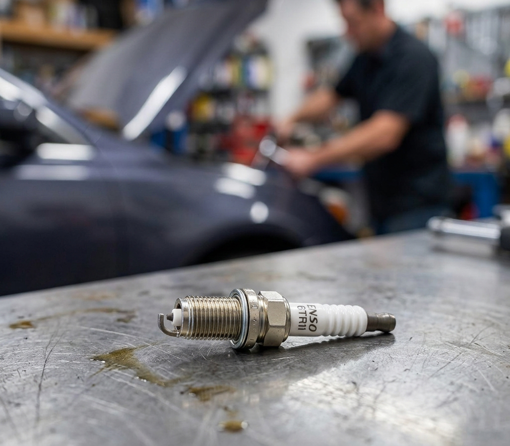
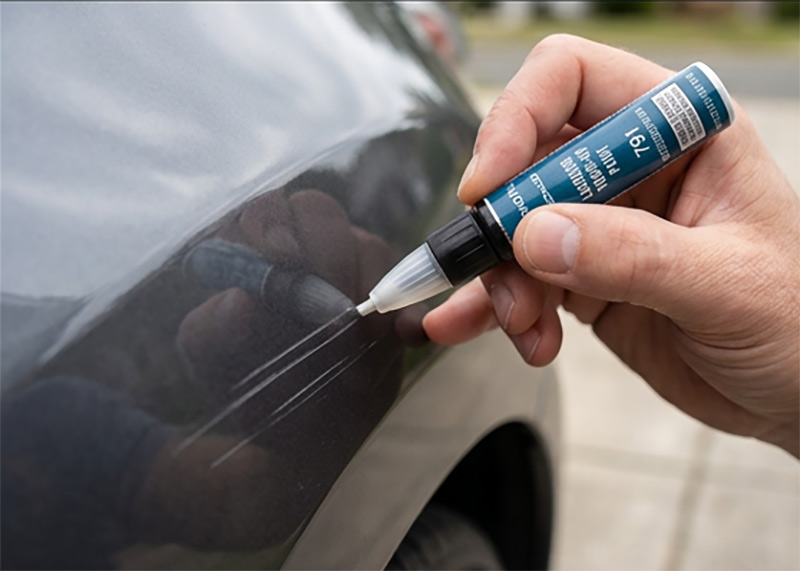
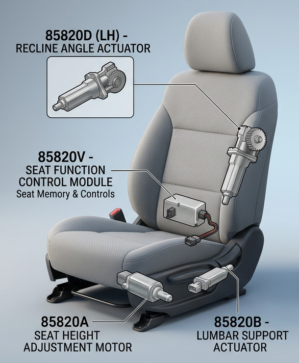
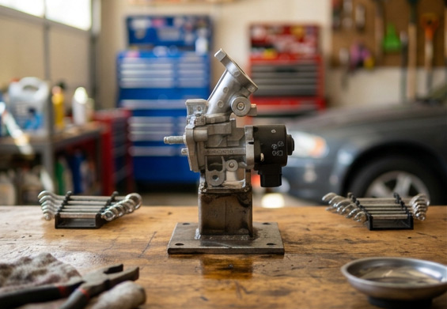
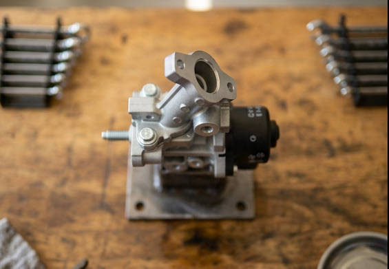
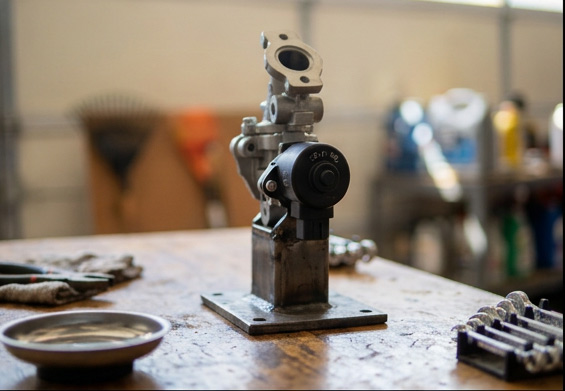
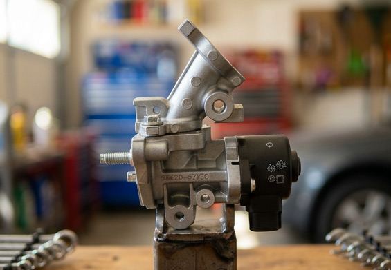

Thousands of parts with no studio shot and no realistic way to shoot them all. We built the imagery from engineering files instead, and held every part exact to spec. This is the work the rest of Tolerance Studio is built on.



Once a part is rebuilt from source, it never needs to be shot again. Any angle, any surface, any scene — all rendered from the same single recreation at full 4K resolution.




Drag to compare the source sketch to the finished composite.